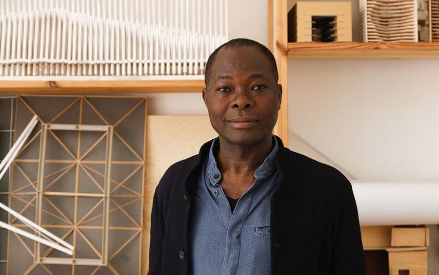

Francis Kéré, ganador del Premio Pritzker de Arquitectura 2022
Francis Kéré se convirtió en el primer arquitecto africano en ganar el Premio Pritzker, el galardón de mayor importancia en el mundo de la arquitectura.
Este 2022, el ganador del Premio Pritzker de Arquitectura es Diébédo Francis Kéré, conocido como Francis Kéré. Arquitecto, educador, activista social nacido en Burkina Faso, fue ganador del Premio Aga Khan de Arquitectura 2004 y diseñador del Pabellón Serpentine 2017. Reconocido por "empoderar y transformar comunidades a través del proceso de la arquitectura", Kéré, el primer arquitecto negro en obtener este premio, trabaja principalmente en áreas cargadas de limitaciones y adversidades, utilizando materiales locales y construyendo instalaciones contemporáneas cuyo valor excede su estructura, sirviendo y estabilizando el futuro de comunidades enteras.